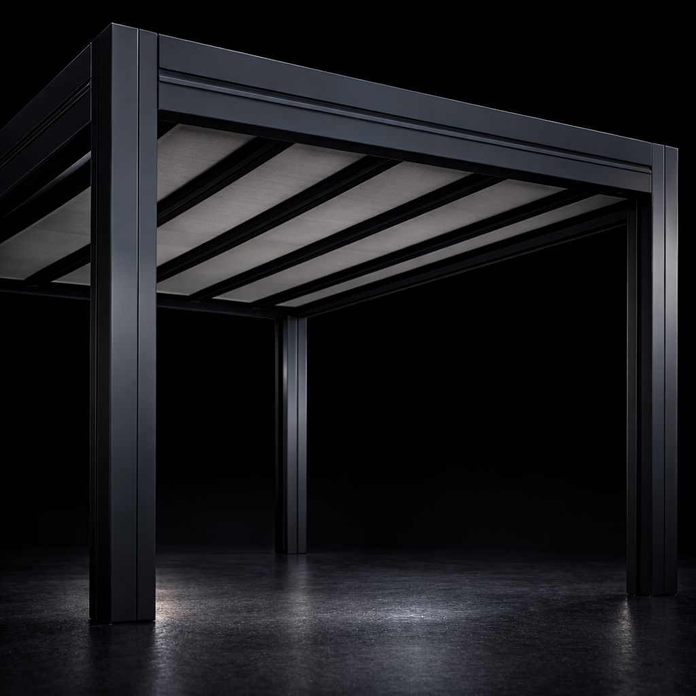
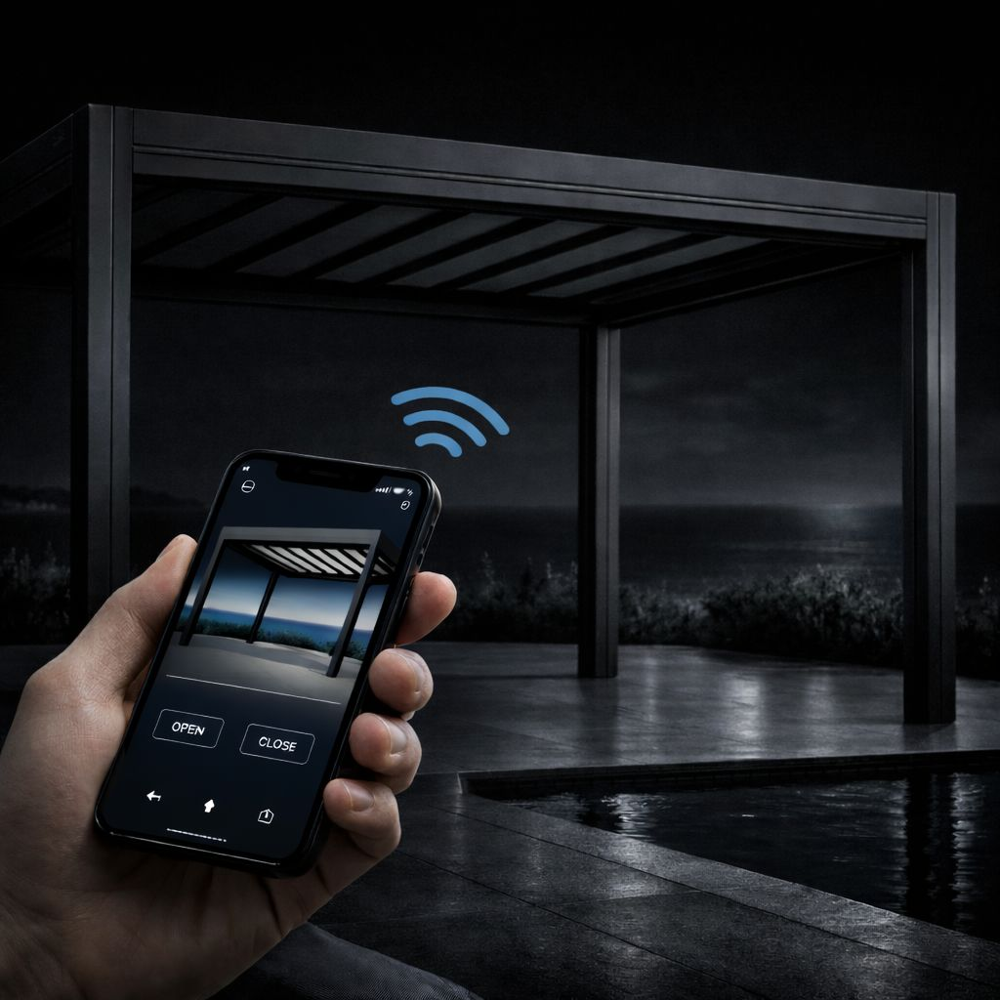
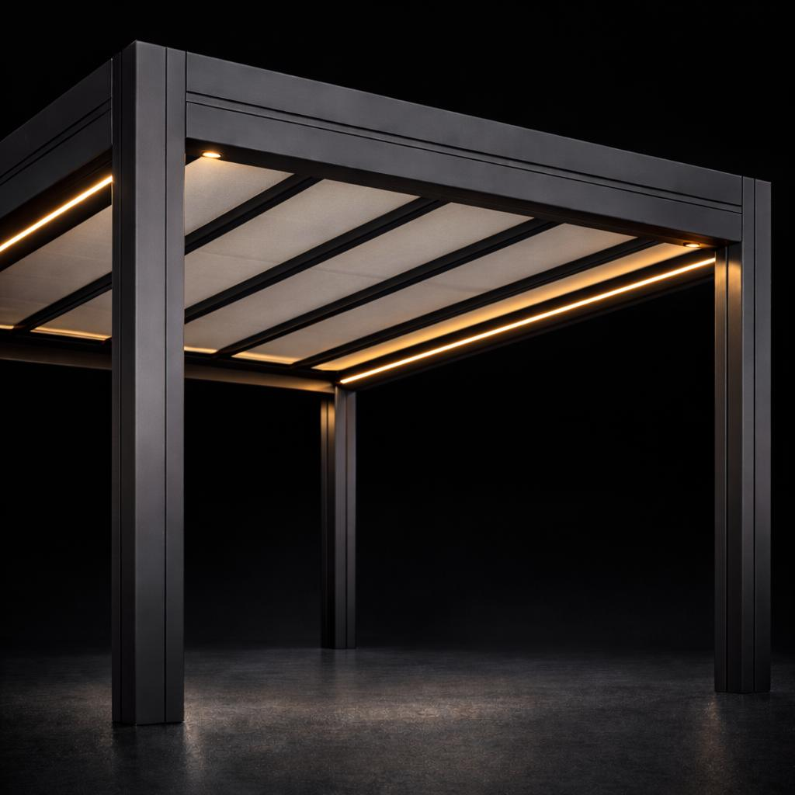

Diseño exterior elegante, estructura de aluminio y confort durante todo el año.
Configurar PérgolaLa pérgola Compact es una solución pensada para crear zonas exteriores protegidas, elegantes y versátiles gracias a su techo de lona tensada guiado por perfilería de aluminio y a su sistema motorizado de apertura y recogida.
Su diseño minimalista encaja perfectamente en terrazas, jardines, patios, porches y proyectos de arquitectura contemporánea, aportando confort, protección y una estética muy cuidada.
La pérgola Compact de lona tensada es una solución ideal para quienes buscan una estructura exterior elegante, ligera y práctica. Permite regular la protección solar y mejorar el aprovechamiento del espacio exterior con una integración limpia y sofisticada.
En ERB Deco trabajamos soluciones de exterior pensadas para integrarse con naturalidad en viviendas, terrazas, patios, áticos y jardines, combinando diseño, funcionalidad y confort.
Ingeniería diseñada para durabilidad, estética y confort exterior.

Techo de lona tensada
Protección solar y recogida motorizada para disfrutar del exterior con mayor flexibilidad.

Estructura de aluminio
Perfilería extrusionada de alta resistencia con un acabado limpio y elegante.

Drenaje integrado
Evacuación de agua oculta en la estructura para mantener una estética cuidada.

Automatización
Control remoto compatible con sistemas domóticos para un uso cómodo y eficiente.

Iluminación LED perimetral e integrada para crear un ambiente más cálido y elegante.

Toldo vertical ZIP para una mayor protección lateral frente al sol, el viento o la lluvia.

Sensor de viento y sol para automatizar la protección y mejorar la seguridad de la instalación.

Calefacción interior para ampliar el confort y el uso del espacio exterior en meses más fríos.
La pérgola Compact combina diseño, tecnología y practicidad para transformar terrazas, jardines y porches en espacios más confortables y mejor aprovechados durante todo el año.
Si buscas una pérgola de lona tensada con estructura de aluminio y opciones premium de personalización, puedes configurar tu proyecto y solicitar información directamente desde nuestra web.
En ERB Deco realizamos proyectos de pérgolas para diferentes espacios exteriores, adaptándonos a las características de cada vivienda, terraza o jardín.
Trabajamos especialmente en zonas de pérgola lona tensada en Girona y provincia y pérgola lona tensada en Barcelona y provincia, donde desarrollamos soluciones de exterior elegantes, funcionales y pensadas para integrarse con la arquitectura del espacio.
Puedes conocer más sobre nuestra pérgola lona tensada, ver la página de pérgolas tensadas con inclinacion o solicitar directamente tu presupuesto.